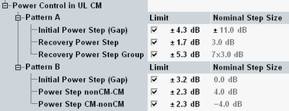

During uplink compressed frames a change of output power is required, since the transmission of data is performed in a shorter interval. The ratio of the amplitude between the DPDCH codes and the DPCCH code also varies. The power step during compressed mode is calculated in the UE following the inner loop power control.
Excess error in transmit power setting in compressed mode increases the interference to other channels, or increases transmission errors in the uplink.
The "UL CM TX" test is specified in 3GPP TS 34.121, section 5.7. A requirement of the initial connection without CM is defined for an RMC signal with 12.2 kbps, βc= 8/15 and βd=15/15.
Set the UE output power according to the used compressed mode pattern as described in table below.
CM pattern | Initial UE output power PA | Algorithm / step size |
|---|---|---|
Pattern A (rising TPC) | -36 ± 9 dBm | 1 / 2 dB |
Pattern A (falling TPC) | 2 ± 9 dBm | 1 / 2 dB |
Pattern B | -10 ± 9 dBm | 1 / 1 dB |
The default limit settings in the configuration dialog correspond to the conformance test requirements.

The limits are relevant for TPC setup "TPC Step Test UL CM".
3GPP defines the following requirements for the recovery period. The TX mean power steps due to inner loop power control have to be within the range shown in table below.